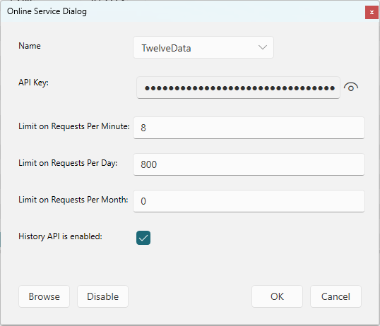

Online Services#
Daily stock prices and exchange rates can be downloaded from a configured online service. Select Online Services... from the Online Menu to configure your service.
When stock quote information is downloaded you will see full stock quote information available in the Stock Chart.
When Exchange Rate information is downloaded you will see up to date currency exchange rates in the
Currencies View.

MyMoney can download from twelvedata.com or yahoo.com . These services require a registered account and will provide an API Key which you enter here. Depending on your plan you will also have limits on the number of requests per minute or per day or per month. Enter those numbers here and MyMoney will ensure those limits are not exceeded. Just leave the value at 0 if there is no limit. MyMoney recommends using twelvedata.com.
During the download you will see some progress information in the status bar on the bottom right. If the download is blocked on the quota limits this progress bar may pause for a moment. If you reach daily or monthly limits the download will print an error message explaining why the stock quotes are not updating right now.
https://twelvedata.com/ TwelveData provides stock, forex, cryptocurrency, ETF info with up to 20 years of historical data. The free account can do 8 requests/minute, and 800 per day. To setup a free account on their website, click their Get Started button, create a new account and copy the "api key" to the API Key field in the MyMoney Stock Quote Service Dialog.
https://fastforex.io/ Click "Get Your Free API Key Today" button right on the home page, and enter your name and email, then click "get free api key". The same page will give you a message saying "Your API key is: " with a number that looks like a GUID, and so copy that to the API key field in the MyMoney Online Services Dialog. This free key will expire in 8 days, but if you want to use the paid service for $18/month you will get a huge a limit of 1,000,000 API requests per month and MyMoney is unlikely to ever hit that limit. The current rates are cached and only updated once per day.
Cache#
The stock quote information is cached in a folder named StockQuotes
next to your *.mmdb money database file. There is also a special
DownloadLog.xml index file in this folder which keeps tabs on how
recently the stock quotes were updated and so on. These cached files
are used to efficiently compute the historical market value for your
investment accounts which you can view by selecting
different dates in the Portfolio Report
and in the Networth Report.